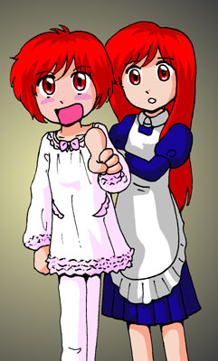

戻る
新米皇女の大冒険
(15) 新米皇女は風邪を引く
作：この市場
「止めることかなわぬ怒りの風！その刃もて、すべてを切り裂け！」
ニルゼンが珍しく、攻撃呪文を唱えた。神官であっても、ある程度の攻撃呪文は使える。なにしろ、この部屋に入るために、武器はぜんぶ置いてきてしまっている。魔法で戦うしかないのだ。
「ブレシュ！」
呪文の詠唱が終わると、風が小さな竜巻を作り、ビスマに向っていく。
「笑止！」
ビスマを中心に渦巻いていた水が、竜巻とぶつかった。
ドシューーーーッ！！
はげしく飛び散る水と風。どうやら、この程度の魔法では、まったく通じないようだ。人と魔人、本来、力量の差は歴然としている。
ニルゼンが孤軍奮闘する後ろで、アルダールは、いらだっていた。剣がないと、自分はこんなにも無力なのか、と。
『もうすぐだよ』
アルダールの耳に、突然そんな声が聞こえた。子供の声のようだったが、ここには今や、ビスマとニルゼンたちの他には誰もいないはず。侍女たちも逃げ去ってしまったのだ。
『もうすぐ来る。そうすれば、ぼくの力が使えるよ。「炎の勇者」』
また、声だけが聞こえてくる。「炎の勇者」だって？
「死ねぇっ！」
ビスマの絶叫が響いた。
ドンッ！！
らせん状にうずを巻いた水が、ニルゼンに叩きつけられる。水の嵐が過ぎ去った後には、ボロボロになったニルゼンが立っていた。着ていた珍妙な衣装もズタズタに引き裂かれている。しかし、ニルゼンはひるまない。
「死にはしない！愛するクオン姫様との初めての夜を迎える、その日まではっ！」
そう叫んだ次の瞬間。
「誰との初めての夜だってぇっ！？」
そんなかん高い声とともに、何か細長い物体が飛んできて、ニルゼンの後頭部を直撃した。
すかーーーーーん！！
「そのお声はっ！」
なにごともなかったかのように、後を振り向くニルゼン。おそるべき人間離れした防御力！・・・というわけではなく、実は、防御力強化の魔法を自分にかけてあるだけの話だ。後頭部に堅いものが当たったぐらいでは、「ちょっと痛いなぁ」で済む。

それよりも、ニルゼンにとっては、その声の主の方が重要だった。
「姫様！ご無事でしたか！」
ニルゼンはうれしそうな声で呼びかける。そこには、クオンがいたのだ。高熱で顔が赤いままのクオンが、侍女のメアレインに肩を抱きかかえられるようにして、立っていた。
強大な敵に歯が立たない仲間たちの危機一髪のときにあらわれる、というのは、いかにも主役らしい、かっこいいシーンだ。しかし、クオンは気が付いていなかった。自分が、寝間着姿だったことを。そして、その寝間着がまた、少し透き通った白い布に、ピンクのふりふりがたくさんついている、いかにもお嬢様風のかわいらしいものだったことにも、当然気付いてはいなかった。ちょっと不憫。
一方、アルダールにとっては、ニルゼンの後頭部を直撃して床に落ちた物体の方が重要だった。
赤い鞘に収まった、光り輝く剣。・・・そんなもん放るなよ、クオン。
『さぁ』
アルダールの耳に、また声が聞こえた。
『手に取るんだ。ぼくの力を』
この声の主の正体、それは・・・？
赤い剣の上に、ゆらりと人の姿が現れる。赤い服を着た少年のようだ。ファナールよりも少し年下ぐらいの感じ。もし人間だったなら、であるが。
少年は、アルダールを見て、にこりと笑った。
意を決したアルダールは、剣にかけ寄って、がしっと両手でつかむ。
「抜かせるかぁっ！」
と、アルダールの行動に気付いたビスマが、アルダールに水の渦巻きを叩きつけてきた。
『抜け！』
赤い少年が命じるまま、アルダールはスラリと剣を抜いた。これこそ、伝説に歌われた「炎帝の剣」！
ぶおぉっ！
抜いた剣の先端から炎が噴き出した。炎は、刀身をくるむように手元までひろがる。しかし、持っているアルダールは、熱くはないらしい。
ただ、アルダールには、その剣の持つすさまじい力は感じられた。今まで使っていた「炎の剣」も、炎の力を持つ魔法剣だったが、これはケタが違う。すさまじいエネルギーだ。
「やれるわ！」
アルダールは、ぐいっと炎帝の剣をかまえるや、即座にビスマに向って突進した。
「うおぉぉぉぉっ！」
ジャアッ！と水の壁がアルダールの前に立ちふさがった。しかし、アルダールは、剣でそれをなぎ払う。
「魔女よ！覚悟しなさい！」
「くうっ！」
後退しかけるビスマに、アルダールは正面から剣を突き入れる。その剣は、ビスマの胸の下、先にファナールの電撃が貫いた部分を、正確に刺し貫いた。
「ぐおっ！！」
刺さった剣をぐいっと抜くと、ビスマの口から、ごぼっと黒い血があふれる。アルダールは、容赦なく止めの一撃を加えるべく、剣を振りかざした。
もはや、魔女ビスマの命は風前の灯火かと思われた、その時。意外な救いの手が差し伸べられた。
「ま、待ってくれ」
と、苦しそうな声で止めたのは、クオンだった。アルダールは、後を振り向いて、
「どうして止めるの！」
と叫ぶ。
「どうしてって？」
クオンはにこりと笑って続けた。さも当然というように。
「だって、お客さんだよ？」
「は？」
アルダールが不思議そうに聞き返した。ニルゼンは、口元がちょっとゆるんでいる。ピンク色のスライムは、しょうがないなぁとでもいうように、にゅる〜と平べったくなった。
ビスマが、胸に開いた穴を手で押さえながら、クオンを見る。
「な、なにを言っている？」
もちろん、ビスマには、クオンの言葉の意味はわからない。不思議そうなビスマに、クオンは話しかけた。
「ぼくは、本当は侍女のフォルではなくて、タンバート銀行本店のクオンと言います。1万バイル以上なら、1年で5％っていう定期預金がお得ですけど、いかがですか？」
それは、クオンの本業、預金の勧誘だった。
「ち、ちょっと・・・」
アルダールが口をはさむ間もなく、ビスマが即答した。
「いいわ。魔界銀行の定期が10万バイル、満期が来てるから、それを預けましょう」
アルダールは、口をぱくぱくするだけ。
クオンは、優雅に頭を下げた。
「ありがとうございます。タンバート銀行を今後ともごひいきに」
そして、それを言い終わった瞬間、クオンはメアレインに抱えられたまま、気を失ってしまった。すこしよろけるメアレイン。
アルダールは、ぼう然として立っているだけ。ニルゼンは、クオンたちの方に駆け寄っていく。ファナールスライムも、のたのたとニルゼンに続いた。
ビスマは苦笑しながら、
「その子が目を覚ましたら、伝えておいておくれ。景品はいらないけど、来年のカレンダーは欲しい、とな。そうそう、それから、通帳はピンクのスライムの絵が入ってるのがいいな」
と言って、背後からにじみ出した暗闇の中に消えていく。それにしても、タンバート銀行の通帳のデザイン、どうして知ってるのだろう？
「くっ、くくくく、ははははははははは」
小さくなっていく黒い染みから、ビスマの笑い声だけが、少しのあいだ聞こえていた。
クオンは、風邪をひいたのだった。泉の底でおぼれそうになり、びしょぬれになったのが原因だ。
そして、泉の底で手に入れた「炎の剣」をアルダールに届けたため、また熱が上がってしまった。
ちょっとした怪我だったら魔法で簡単に治せるが、風邪を治す方法はない。魔法も意外に融通がきかない。
クオンは、城の中では、あいかわらず侍女ということになっているので、侍女用のベッドで寝かされている。メアレインも侍女として雇われているため、自分の仕事もあるから、付きっきりというわけにもいかない。だから、仲間たちやアルダールの母ファインなども含め、交代で看病に当たっている。
ニルゼンはビフォレス王国の王子だという正体を明かしているので、ひとりの侍女のところに頻繁にあらわれる彼について、城内では、いろいろなウワサが飛び交っていたらしい。もっともオーソドックスなところでは、侍女を見初めたニルゼン王子が、自分の妃として国につれ帰ろうとしている、というものだった。
夜中。クオンは目をさました。
真っ暗な中に、ランプの火がかすかに振れている。
ベッドの横に誰かいるようだ。暗くて誰かはわからない。
そして、自分の右手が、自分よりずっと大きな手を握り締めていることに気付いた。
その暖かさに、なんとなくほっとして、クオンはふたたび眠りに落ちていく。
「水の魔女」ビスマは、リトアイザン王国を去った。失われたものも大きかったが、取り戻せるものから取り戻していくしかないだろう。
そんなある日の夜、ファインの家に高貴な客がやって来た。
「陛下！」
病にやつれた姿、それは国王エルダール1世だった。支えがないと歩くのもつらそうだが、病床にふせっていたときよりは、いくぶんか顔色はマシになっている。ビスマが去ってからは、ファインは毎日看病しに城に通っていた。今も、ファインは城から帰ってきたところだったのだ。
国王は、付き添いの侍女を下がらせて、ひとりでファインの前に立った。
「ファイン。今まで長い間、苦労をかけてしまって、すまない。だが、これからもっと苦労をかけてもよいか？」
「なに言ってんですか、陛下？苦労なんて、した覚えありませんよ。あたしは」
ファイン、あいかわらずの言葉づかいだ。相手が国王でも、この調子。
エルダール1世はそんなことは気にせず、うれしそうに笑って大切な言葉を続ける。
「私の横に座ると、苦労するぞ？」
「あ・・・」
ファインは気付いた。国王が言いたいことに。
「陛下」
「ファイン。余の正妃になってくれ」
「あなた方だけでは心配です。また姫様があんな目に会わないとも限りませんし、わたしもついていきます」
メアレインは、クオンたちを前にして、宣言した。
ようやくクオンの体力が回復して、リトアイザン城を出発する日のことだった。
「ちょっと待ちなさい。あなた、戦うことはできるの？」
アルダールは、正体を隠すため、まだ男のなりをしたまま。言葉づかいだけは高貴な女性風なので、すごく違和感がある。
「戦いは専門家のみなさんにおまかせしますわ。わたしは、みなさんの身の回りのお世話に専念します。それならプロですから」
自信を持って言いきるメアレインは、一歩も引かない。
クオンは困ったような顔をしているが、今のところ口を出していない。
ちなみに、城を出る際のクオンの衣装については、意見が分かれた。
A案。城で働いていた侍女が故郷に帰るという設定。アルダールが提案してメアレインが賛同。
B案。旅の踊り子がふたたび旅に出るという設定。ファナールが提案してニルゼンが賛同。
本人は、元の少年戦士の格好を主張したが、1対2対2で、最初に候補から落ちてしまっていた。本人の意思はどうでもいいらしい。
結局、新王妃ファインが裁定を下し、今のクオンは、田舎に帰るメイドさんという格好である。そのために、ファインが昔着ていた服を着せてもらったクオン。メアレインもおそろいの格好をしている。いっしょに田舎から出てきた仲良し姉妹という設定にしてしまったのだ。生まれたのはクオンの方がわずかに早いのだが、見かけは逆なので、クオンの方が妹という設定。ただ、誰も聞いてくれなかったので、せっかく作った姉妹という設定は、残念ながら日の目を見ることはなかった。
◇◇◇続く◇◇◇
戻る
□ 感想はこちらに □